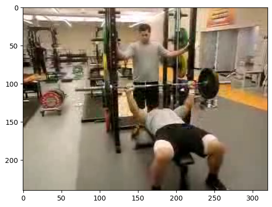

import huggingface_hub
import tarfile
import transformers
import pytorchvideo.data
import pytorchvideo.transforms
import torchvision.transforms
import evaluate
import torch
import numpy as np
import imageio
import IPython.display
import matplotlib.pyplot as plt Quiz-5 (2024.11.05) // 범위: 07wk-1 까지

| 항목 | 허용 여부 | 비고 |
|---|---|---|
| 강의노트 참고 | 허용 | 수업 중 제공된 강의노트나 본인이 정리한 자료를 참고 가능 |
| 구글 검색 | 허용 | 인터넷을 통한 자료 검색 및 정보 확인 가능 |
| 생성 모형 사용 | 허용 안함 | 인공지능 기반 도구(GPT 등) 사용 불가 |
!pip install pytorchvideo evaluate1. 동영상자료의 이해 – 40점
file_path = huggingface_hub.hf_hub_download(
repo_id="sayakpaul/ucf101-subset",
filename="UCF101_subset.tar.gz",
repo_type="dataset"
)
with tarfile.open(file_path) as t:
t.extractall(".")(1) 아래의 코드를 이용하여 “UCF101_subset/test/BenchPress/v_BenchPress_g05_c02.avi” 를 텐서의 형태로 불러오라.
video_path = "UCF101_subset/test/BenchPress/v_BenchPress_g05_c02.avi"
video = pytorchvideo.data.encoded_video.EncodedVideo.from_path(video_path).get_clip(0, float('inf'))['video']위 코드로 불러온 동영상의 흑백/컬러 여부, 프레임 수, 높이(height), 너비(width) 를 확인하라. – 10점
(풀이)
video.shape # 칼라,프레임67,h240,w320 torch.Size([3, 67, 240, 320])(2) video의 마지막 프레임에 해당하는 이미지를 출력하라. – 10점
(풀이)
plt.imshow(video[:,-1,:,:].permute(1,2,0)/255)
(3) 이 동영상을 확인할 수 있는 적당한 함수 display_gif를 선언하고 동영상을 확인하라. – 10점
(풀이)
def display_gif(video_cthw):
video_thwc = video_cthw.permute(1,2,3,0)
frames = [frame.numpy().astype('uint8') for frame in video_thwc]
imageio.mimsave("sample.gif",frames)
return IPython.display.Image("sample.gif")display_gif(video)<IPython.core.display.Image object>(4) 주어진 동영상에 아래의 변환을 적용한 후, display_gif 함수를 사용하여 결과를 확인하라. – 10점
pytorchvideo.transforms.UniformTemporalSubsample(4): 프레임 수를 4개로torchvision.transforms.Resize((112, 112)): 이미지 크기를 112x112로 조정
(풀이)
f = torchvision.transforms.Compose([
pytorchvideo.transforms.UniformTemporalSubsample(4),
torchvision.transforms.Resize((112, 112))
])display_gif(f(video))<IPython.core.display.Image object>2. ucf101-subset 분석 – 60점
(1) 아래의 코드와 설정을 이용하여 VideoMAE 모델을 선언하고, ucf101-subset 데이터셋을 변환하여 학습하라. – 50점
모델선언
- 프레임 수: 4
- 이미지 크기: 112x112
- 클래스 레이블 매핑: label2id와 id2label
label2id = {
'ApplyEyeMakeup': 0,
'ApplyLipstick': 1,
'Archery': 2,
'BabyCrawling': 3,
'BalanceBeam': 4,
'BandMarching': 5,
'BaseballPitch': 6,
'Basketball': 7,
'BasketballDunk': 8,
'BenchPress': 9
}
id2label = {
0: 'ApplyEyeMakeup',
1: 'ApplyLipstick',
2: 'Archery',
3: 'BabyCrawling',
4: 'BalanceBeam',
5: 'BandMarching',
6: 'BaseballPitch',
7: 'Basketball',
8: 'BasketballDunk',
9: 'BenchPress'
}
config = transformers.VideoMAEConfig.from_pretrained("MCG-NJU/videomae-base")
config.num_frames = 4 # 프레임 수를 4로 조정
config.label2id = label2id
config.id2label = id2label
config.image_size = 112 # 이미지 크기를 112x112로 조정
# 설정된 config로 모델 선언
model = transformers.VideoMAEForVideoClassification.from_pretrained(
"MCG-NJU/videomae-base",
config=config,
ignore_mismatched_sizes=True # 가중치 크기 불일치 무시
)Some weights of VideoMAEForVideoClassification were not initialized from the model checkpoint at MCG-NJU/videomae-base and are newly initialized: ['classifier.bias', 'classifier.weight']
You should probably TRAIN this model on a down-stream task to be able to use it for predictions and inference.데이터변환
모델 학습을 위해 train_dataset, val_dataset, test_dataset에 아래의 “동일한” 전처리를 적용하라. 각 데이터셋에 적용할 clip_sampler와 transform은 다음과 같다:
# clip_sampler
pytorchvideo.data.make_clip_sampler("random", 3),
# transform
pytorchvideo.transforms.UniformTemporalSubsample(?),
torchvision.transforms.Lambda(lambda x: x / 255.0),
pytorchvideo.transforms.Normalize([0.485, 0.456, 0.406], [0.229, 0.224, 0.225]),
torchvision.transforms.Resize((???,???))위의 ?에 들어갈 값은 주어진 설정에 맞게 채우라.
Training Args
아래와 같은 설정으로 transformers.TrainingArguments를 작성하라.
transformers.TrainingArguments(
'영상분류학습된모델',
remove_unused_columns=False,
eval_strategy="epoch",
save_strategy="epoch",
learning_rate=5e-5,
per_device_train_batch_size=8,
per_device_eval_batch_size=8,
warmup_ratio=0.1,
logging_steps=10,
load_best_model_at_end=True,
metric_for_best_model="accuracy",
push_to_hub=False,
max_steps=(train_dataset.num_videos // 8) * 4,
report_to="none"
)학습시간은 코랩에서 약 4~5분 소요
(풀이)
## Step1
train_dataset = pytorchvideo.data.labeled_video_dataset(
data_path = 'UCF101_subset/train',
clip_sampler = pytorchvideo.data.make_clip_sampler("random", 3),
decode_audio = False,
transform = pytorchvideo.transforms.ApplyTransformToKey(
key="video",
transform=torchvision.transforms.Compose(
[
pytorchvideo.transforms.UniformTemporalSubsample(4),
torchvision.transforms.Lambda(lambda x: x / 255.0),
pytorchvideo.transforms.Normalize([0.485, 0.456, 0.406], [0.229, 0.224, 0.225]),
torchvision.transforms.Resize((112,112))
]
),
)
)
val_dataset = pytorchvideo.data.labeled_video_dataset(
data_path = 'UCF101_subset/val',
clip_sampler = pytorchvideo.data.make_clip_sampler("uniform", 2.1333333333333333),
decode_audio = False,
transform = pytorchvideo.transforms.ApplyTransformToKey(
key="video",
transform=torchvision.transforms.Compose(
[
pytorchvideo.transforms.UniformTemporalSubsample(4),
torchvision.transforms.Lambda(lambda x: x / 255.0),
pytorchvideo.transforms.Normalize([0.485, 0.456, 0.406], [0.229, 0.224, 0.225]),
torchvision.transforms.Resize((112,112))
]
),
)
)
test_dataset = pytorchvideo.data.labeled_video_dataset(
data_path = 'UCF101_subset/test',
clip_sampler = pytorchvideo.data.make_clip_sampler("uniform", 2.1333333333333333),
decode_audio = False,
transform = pytorchvideo.transforms.ApplyTransformToKey(
key="video",
transform=torchvision.transforms.Compose(
[
pytorchvideo.transforms.UniformTemporalSubsample(4),
torchvision.transforms.Lambda(lambda x: x / 255.0),
pytorchvideo.transforms.Normalize([0.485, 0.456, 0.406], [0.229, 0.224, 0.225]),
torchvision.transforms.Resize((112,112))
]
),
)
)
## Step2
label2id = {
'ApplyEyeMakeup': 0,
'ApplyLipstick': 1,
'Archery': 2,
'BabyCrawling': 3,
'BalanceBeam': 4,
'BandMarching': 5,
'BaseballPitch': 6,
'Basketball': 7,
'BasketballDunk': 8,
'BenchPress': 9
}
id2label = {
0: 'ApplyEyeMakeup',
1: 'ApplyLipstick',
2: 'Archery',
3: 'BabyCrawling',
4: 'BalanceBeam',
5: 'BandMarching',
6: 'BaseballPitch',
7: 'Basketball',
8: 'BasketballDunk',
9: 'BenchPress'
}
config = transformers.VideoMAEConfig.from_pretrained("MCG-NJU/videomae-base")
config.num_frames = 4 # 프레임 수를 4로 조정
config.label2id = label2id
config.id2label = id2label
config.image_size = 112 # 이미지 크기를 112x112로 조정
# 설정된 config로 모델 선언
model = transformers.VideoMAEForVideoClassification.from_pretrained(
"MCG-NJU/videomae-base",
config=config,
ignore_mismatched_sizes=True # 가중치 크기 불일치 무시
)
## Step3
metric = evaluate.load("accuracy")
def compute_metrics(eval_pred):
predictions = np.argmax(eval_pred.predictions, axis=1)
return metric.compute(predictions=predictions, references=eval_pred.label_ids)
def collate_fn(examples): # examples 는 [Dict, Dict, ...]
tsr_ntchw = torch.stack([example['video'].permute(1,0,2,3) for example in examples])
tsrlb_n = torch.tensor([example['label'] for example in examples])
return dict(pixel_values=tsr_ntchw,labels=tsrlb_n)
args = transformers.TrainingArguments(
'동영상분류학습된모델',
remove_unused_columns=False,
eval_strategy="epoch",
save_strategy="epoch",
learning_rate=5e-5,
per_device_train_batch_size=8,
per_device_eval_batch_size=8,
warmup_ratio=0.1,
logging_steps=10,
load_best_model_at_end=True,
metric_for_best_model="accuracy",
push_to_hub=False,
max_steps=(train_dataset.num_videos // 8) * 4,
report_to="none"
)
image_processor = transformers.VideoMAEImageProcessor.from_pretrained("MCG-NJU/videomae-base")
trainer = transformers.Trainer(
model,
args,
train_dataset=train_dataset,
eval_dataset=val_dataset,
tokenizer=image_processor,
compute_metrics=compute_metrics,
data_collator=collate_fn,
)
train_results = trainer.train()Some weights of VideoMAEForVideoClassification were not initialized from the model checkpoint at MCG-NJU/videomae-base and are newly initialized: ['classifier.bias', 'classifier.weight']
You should probably TRAIN this model on a down-stream task to be able to use it for predictions and inference.
max_steps is given, it will override any value given in num_train_epochs
[148/148 01:09, Epoch 3/9223372036854775807]
| Epoch | Training Loss | Validation Loss | Accuracy |
|---|---|---|---|
| 0 | 1.852300 | 1.640228 | 0.357143 |
| 1 | 0.725400 | 1.060898 | 0.557143 |
| 2 | 0.263300 | 0.727038 | 0.800000 |
| 3 | 0.140500 | 0.632462 | 0.785714 |
(2) test_dataset에 대한 accuracy를 계산하라. – 10점
trainer.predict(test_dataset)PredictionOutput(predictions=array([[-1.0152042 , -0.8373261 , -1.207278 , ..., -1.0499216 ,
3.6036227 , -0.4558872 ],
[ 3.4979932 , 2.726558 , 0.1493614 , ..., -0.68777245,
-1.0310154 , 0.03641261],
[ 3.4107704 , 2.795597 , -0.01008109, ..., -0.7813617 ,
-1.0597252 , 0.15882756],
...,
[ 3.6092486 , 2.3927014 , 1.4169955 , ..., -0.99317455,
-1.3091443 , -0.9473401 ],
[-1.0195913 , -1.9668864 , 0.9362006 , ..., 3.7727222 ,
-0.80633396, -1.3327856 ],
[-1.4548383 , -1.5094501 , 2.0332494 , ..., 2.9641314 ,
-1.1804373 , -0.60928375]], dtype=float32), label_ids=array([8, 0, 0, 3, 3, 7, 9, 3, 3, 3, 9, 9, 9, 8, 8, 3, 3, 3, 8, 8, 9, 9,
5, 5, 5, 5, 5, 5, 5, 0, 0, 5, 5, 5, 5, 4, 5, 5, 5, 5, 5, 6, 5, 5,
5, 5, 5, 5, 5, 5, 7, 6, 2, 2, 2, 9, 9, 9, 9, 9, 6, 7, 1, 1, 1, 9,
9, 2, 2, 6, 8, 6, 7, 2, 6, 3, 3, 3, 3, 6, 9, 9, 9, 9, 4, 1, 1, 1,
5, 0, 0, 0, 5, 7, 3, 3, 7, 7, 0, 0, 0, 1, 1, 1, 5, 5, 5, 5, 9, 2,
2, 2, 6, 4, 3, 3, 3, 0, 0, 5, 5, 9, 9, 9, 9, 6, 2, 2, 2, 7, 3, 3,
3, 3, 7, 5, 7, 8, 0, 0, 2, 2, 2, 2, 3, 3, 6, 2, 4, 4, 1, 1, 1, 7,
7]), metrics={'test_loss': 0.7561460137367249, 'test_accuracy': 0.7096774193548387, 'test_runtime': 5.0448, 'test_samples_per_second': 30.725, 'test_steps_per_second': 3.964})3. 가산점 – 20점
train_dataset에서 레이블이 2인 데이터만을 선택하여, 이 데이터를 기반으로 모델의 예측 성능을 평가하라.
(풀이)
model.to("cpu")
logits = model(**collate_fn([d for d in train_dataset if d['label'] == 2])).logitslogits.argmax(axis=1)tensor([2, 2, 2, 2, 2, 2, 2, 2, 2, 2, 2, 2, 2, 2, 2, 2, 2, 2, 2, 2, 2, 2, 2, 0,
2, 2, 2, 2, 2, 2])29/300.9666666666666667